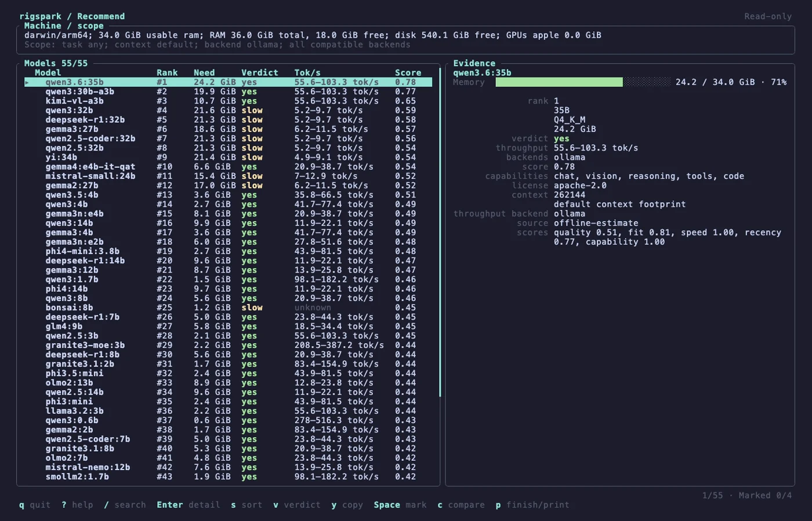
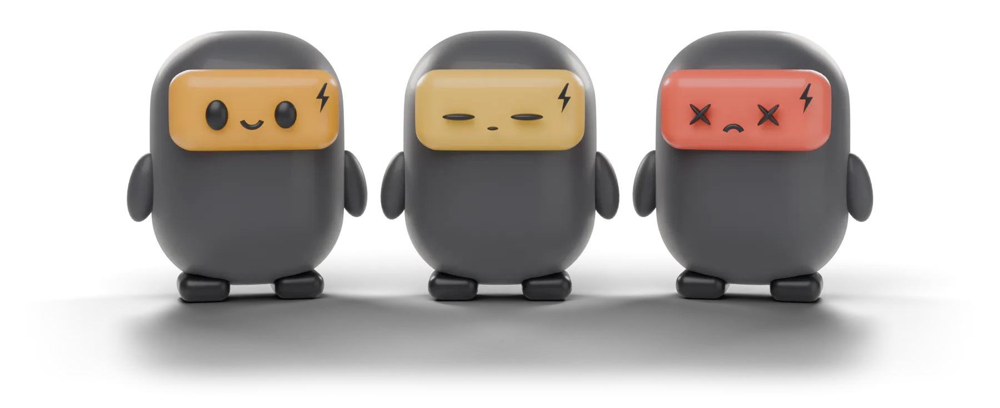
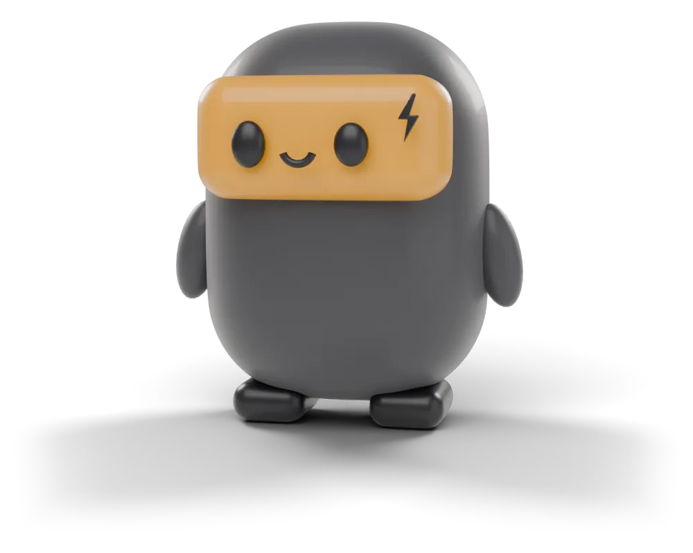
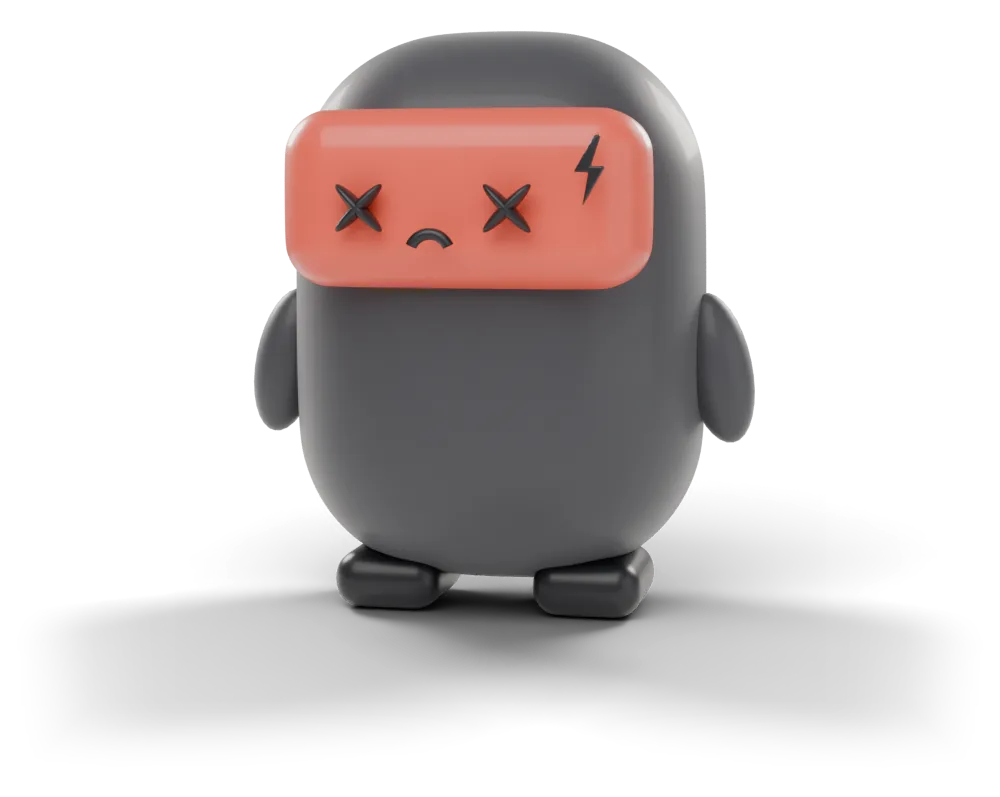
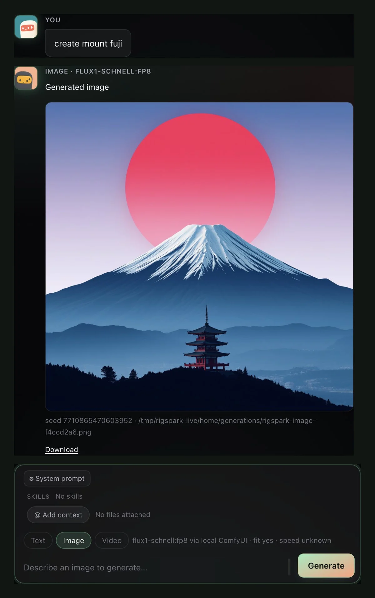
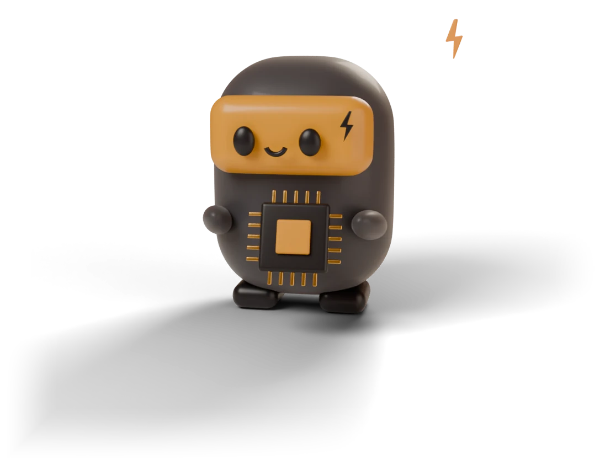
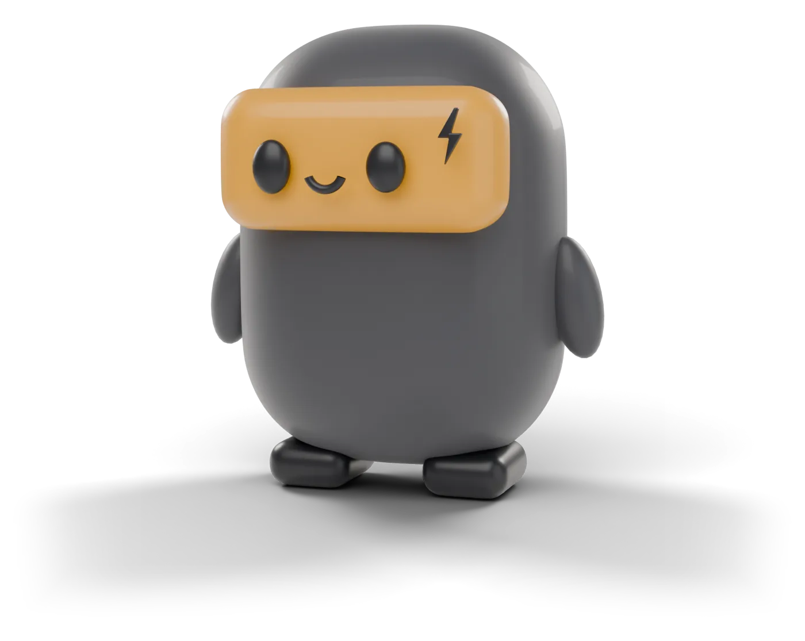
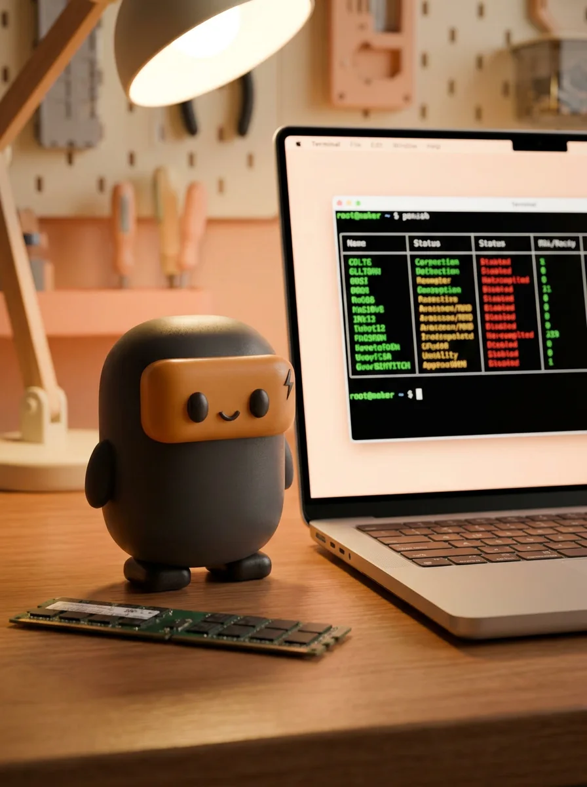
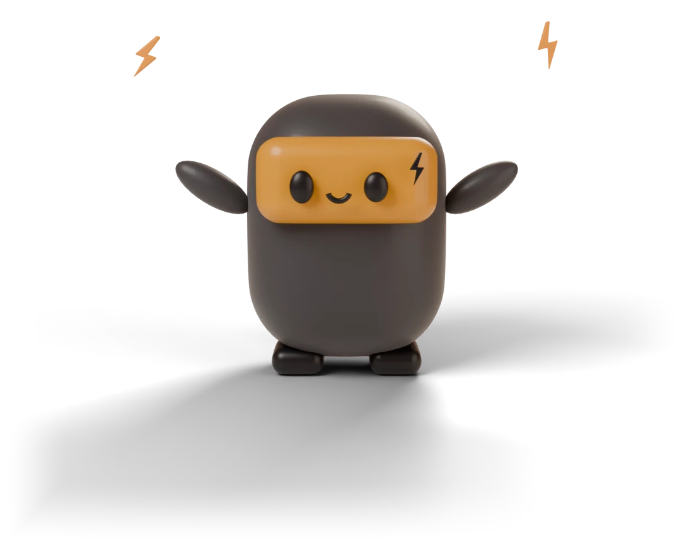

Terminal UI
Every model, ranked for your machine.

Meet Sparky.
Sparky reads your RAM, GPU and disk, then gives every local model a yes, slow or no with estimated tok/s. Advice runs fully offline.
Hi, I’m Sparky.RigSpark’s hardware-aware sidekick.
Reads your rig.RAM, VRAM, unified memory, bandwidth and free disk. Locally.
Ranks all 253 models.A verdict and a binding reason, before a single byte downloads.

Three moods. One honest answer.
Every model in the catalog gets a verdict sized to your machine, with the reason it was given.

Fits in memory and meets bandwidth. You get an estimated tok/s range.
Fits, but memory bandwidth limits speed. You still see the estimate.
Won’t fit. You see the binding reason and skip the download.
Try it here
Pick your graphics, memory, free disk and a model. This preview uses RigSpark’s catalog sizes, fit rule and sourced speed data. The real CLI measures your hardware.


Unified memory on Apple Silicon.
The download has to fit before anything runs.
At the quantization rigspark up installs, default context.
Runs well.
Fits in memory with headroom.
About 7–13 tok/s on Apple silicon Pro (estimate for Ollama)
$ rigspark can-run qwen3:14b → yes, exit 0
Preview only. Fit uses RigSpark’s rule: usable memory (unified or system RAM minus a 2 GiB OS reserve, or the GPU’s VRAM) with 15% headroom, and the download must fit on disk. Speed comes from RigSpark’s sourced bandwidth classes; hardware without one shows unknown rather than a guess. rigspark can-run measures your real machine.
How it works
rigspark recommend sizes each model’s weights and KV cache against your machine and ranks the offline catalog. Models that can’t fit are listed with the reason.
$ rigspark recommend Ranked local LLMs for arm64/darwin (34.0 GiB ram usable): Rank Model Params Est. Mem Verdict Est. tok/s 1 qwen3:30b-a3b 30B 19.9 GiB ✓ yes 55.6–103.3 2 kimi-vl-a3b 16B 10.7 GiB ✓ yes 55.6–103.3 3 qwen3:32b 32B 21.6 GiB ⚠ slow 5.2–9.7 4 deepseek-r1:32b 32B 21.3 GiB ⚠ slow 5.2–9.7 5 gemma3:27b 27B 18.6 GiB ⚠ slow 6.2–11.5 ⋮ Run the top pick: rigspark up qwen3:30b-a3b Won't fit (14): ❌ deepseek-r1:671b (ram-bound) ❌ llama3.3:70b (ram-bound)
unknown; nothing is invented.rigspark can-run qwen3:8b gives one verdict and exits non-zero only on no, so it works as a CI gate.rigspark up pulls, verifies the weights and serves on 127.0.0.1. Then rigspark chat.rigspark recommend output and the browser workspace. Unmute for sound.Every model, ranked for your machine.

FLUX.1 schnell and Wan 2.1 through your own ComfyUI. Nothing leaves 127.0.0.1.

Redesigned and quieter: one model chip, an inspector on demand, light and dark. Still loopback only.

0–100. rigspark doctor names your bottleneck.

Privacy
Most “can I run it” tools guess. Sparky refuses to. Every figure is sourced, or it says unknown.

recommend, can-run and doctor make zero network calls. Same catalog, same answer.
Unsourced throughput is printed as unknown. Models are still ranked by weights, never dropped.
up and switch check pulled weights against the catalog digest and refuse anything that doesn’t match.
Model servers and the workspace bind to 127.0.0.1 with host-header checks.
KV-cache memory math with GQA-correct geometry. Re-rank at --context N or size a quantized cache with --kv-cache.
rigspark migrate carries memory to a bigger model. Preview with --dry-run.
Reusable personas and instruction blocks, stored locally as markdown.
Attach local stdio or loopback MCP servers. Tools run with your approval.
Agent-run code renders charts and images right in the conversation.
Activate a verified catalog snapshot without replacing the app. Rollback included.
Ollama, llama.cpp and MLX with full lifecycle. LM Studio attach-only.
Rendered markdown, scrollback and first-token timing in your shell.
up, switch and down show each stage as done, failed or unconfirmed.
Ollama is an excellent runtime. RigSpark sits on top of it and three others, and tells you what to run before you run it.
Ollama, llama.cpp, MLX or LM Studio
Sparky decides, your runtime runs

One command ranks every model for your rig. One more serves it on 127.0.0.1.
One archive. Three native binaries: rigspark, the llmup alias and rigspark-gui. No Node.js, Python or compiler needed.
brew install shashankswe2020-ux/tap/rigsparkcargo binstall rigspark-cli rigspark-guicargo install rigspark-cli --locked --bin llmup --bin rigspark && cargo install rigspark-gui --lockeddocker pull ghcr.io/shashankswe2020-ux/rigspark:latestIf Sparky helps you, please consider sponsoring the project: buymeacoffee.com/shashanksw9
Archives are unsigned. Verify them against SHA256SUMS. On macOS, clear quarantine with xattr -dr com.apple.quarantine rigspark-*. The container is an older CLI image that sees only the container’s resources.
Figures are RigSpark’s offline estimates, not benchmarks.
Install RigSpark and run rigspark recommend. It detects your GPU, VRAM, RAM and free disk, ranks every catalog model with a yes, slow or no verdict and estimated tokens per second, and lists the models that won’t fit with the reason. rigspark can-run <model> checks a single model.
At Q4_K_M and default context, RigSpark estimates about 5.3 GiB for Llama 3.1 8B, 9.9 GiB for Qwen3 14B, 21.6 GiB for Qwen3 32B and 45.5 GiB for Llama 3.3 70B. Longer contexts add KV cache on top.
Yes. Apple Silicon GPUs share unified memory with the CPU, so RigSpark sizes models against system memory and auto-selects MLX for models with an MLX build, then Ollama, then llama.cpp.
Yes. With your own ComfyUI running on 127.0.0.1, rigspark generate image or rigspark generate video installs pinned, SHA-256 verified FLUX.1 schnell or Wan 2.1 weights and runs a built-in workflow. You can also switch the chat composer to Image or Video in rigspark gui. Paid ComfyUI Partner nodes are refused and nothing is sent to the cloud.
Recommendations, can-run and doctor make no network calls and use a verified local catalog. The explicit catalog --update action downloads a signed snapshot; normal startup does not. Model servers and the browser workspace bind to 127.0.0.1 only.
Yes. RigSpark 2.0 renamed llmup. The llmup command remains as a compatibility alias, and the crates moved from llmup-* to rigspark-*. See the changelog for moving your data directory.
RigSpark
Free and open source. MIT licensed. Native Rust.
